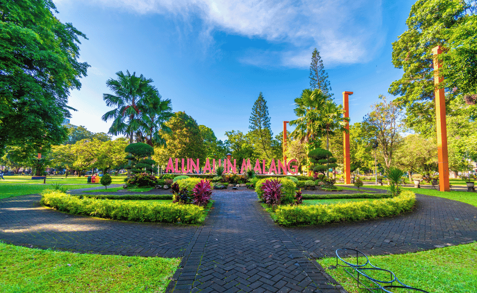

Cakupan Wilayah Ekowisata
EcoMap Malang Raya memetakan potensi wisata ekologis yang kaya akan keanekaragaman hayati (biodiversitas) di bentang alam Malang. Kawasan ini meliputi daerah pegunungan yang sejuk nan subur hingga area pesisir selatan yang memikat.
Contoh: Coban Rondo yang berada di ketinggian 1.000+ mdpl, dihuni ragam flora dan fauna sejuk tropis.
Contoh: Pantai Selok di selatan dengan vegetasi pesisir kuat dan satwa tepi laut intertidal.
Contoh: Perkebunan teh seperti di Wonosari memiliki ekosistem modifikasi sekaligus endemik serangga agraris.